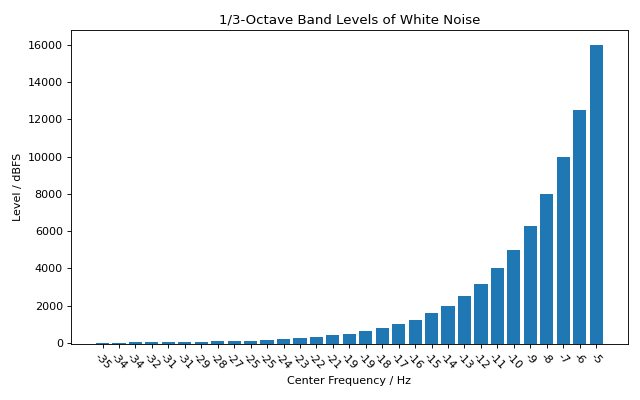

Levels and Statistics
This section provides an overview of how to determine and set signal levels
using the Signal class and its
stats property.
Getting Signal Statistics
All level calculations and statistics are accessed through the .stats
property, which returns a SignalStats object.
This provides convenient access to common metrics, calculated per channel.
Let’s create a noise signal to demonstrate:
>>> import audiotoolbox as audio
>>> import numpy as np
>>>
>>> noise = audio.Signal(n_channels=2, duration=1, fs=48000).add_noise('pink')
The following properties are available:
.stats.rms: The Root-Mean-Square level of the signal.
- .stats.dbspl: The level in dB Sound Pressure Level (SPL), assuming
the signal values are pressure in Pascals relative to 20 µPa.
- .stats.dbfs: The level in dB Full Scale, where 0 dBFS is a sine
wave with an amplitude of 1.
.stats.dba and .stats.dbc: A- and C-weighted SPL.
.stats.crest_factor: The ratio of the peak amplitude to the RMS value.
.stats.mean: The mean value of the signal.
.stats.var: The variance of the signal.
>>> # Get various level and statistical properties
>>> print(f"Mean: {noise.stats.mean}")
Mean: Signal([-2.4e-17, -2.4e-17])
>>>
>>> print(f"Level in dBFS: {noise.stats.dbfs}")
Level in dBFS: Signal([3.01, 3.01])
>>>
>>> print(f"A-weighted SPL: {noise.stats.dba}")
A-weighted SPL: Signal([89.10, 89.10])
Setting and Normalizing Levels
To change a signal’s level, use the methods directly available on the
Signal object.
# Normalize the signal to 70 dB SPL
noise.set_dbspl(70)
# The .stats.dbspl property will now reflect this new level
print(f"New SPL: {noise.stats.dbspl}")
# New SPL: Signal([70., 70.])
# Normalize the signal to -6 dBFS
noise.set_dbfs(-6)
print(f"New dBFS: {noise.stats.dbfs}")
# New dBFS: Signal([-6., -6.])
Octave-Band Levels
It is also possible to get the octave-band or fractional-octave-band
levels of a signal using octave_band_levels().
import audiotoolbox as audio
import numpy as np
import matplotlib.pyplot as plt
# Create a pink noise signal
noise = audio.Signal(1, duration=5, fs=48000).add_noise('white')
# Calculate octave-band levels
fc, levels = noise.stats.octave_band_levels(oct_fraction=3)
base_value = -50
# Plot the results
plt.figure(figsize=(8, 5))
plt.bar(np.arange(len(fc)), levels -base_value, tick_label=np.round(fc).astype(int), bottom=base_value)
plt.title('1/3-Octave Band Levels of White Noise')
plt.xlabel('Center Frequency / Hz')
plt.ylabel('Level / dBFS')
plt.xticks(rotation=-45)
plt.tight_layout()
plt.show()
(Source code, png, hires.png, pdf)
{kind=link}
{kind=link}
